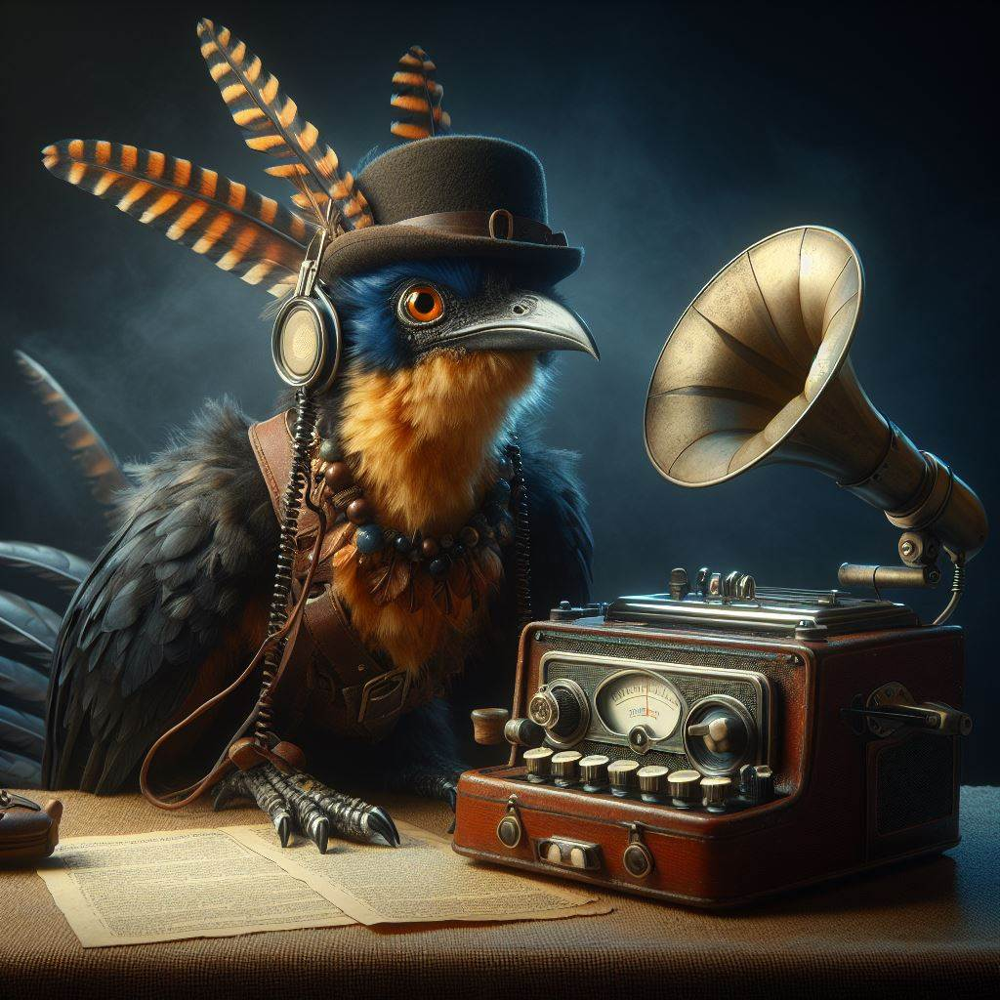

The Kenku are a mythical avian race that got hit cursed to have no original thoughts and only can repeat snippets of what they've heard before (with dictaphonic memory though)
The analogy to large language models “just regurgitating training data” is obvious.
I occasionally post unoriginal ancient wisdom on on Twitter. The “Kenku” accounts on LessWrong and Cyborgism Wiki are also mine.